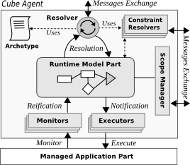

Project Links
Catalog
Other Links

Cube Agent
Internal Architecture
One cube agent is composed of the following modules:
The detail of each module is given below.
Resolver
- See Default Resolver Implementation
Agent Config
<cube>
<agent>
<host value="localhost"/>
<port value="38000"/>
<archetypeUrl value="file:demo.arch"/>
<debug value="false"/>
<persist value="false"/>
<resolver value="default-resolver"/>
<communicator value="socket-communicator"/>
<extensions>
<extension id="fr.liglab.adele.cube.core">
<configurations>
<initializer>
<set-scope id="paris" type="City"/>
<set-node id="home1" type="Gateway"/>
</initializer>
</configurations>
</extension>
<extension id="fr.liglab.adele.cube.monitoring">
</extension>
</extensions>
</agent>
</cube>Running the Cube Agent
Just put the Cube Agent XML Configuration file (.agent) on the load directory of the Cube Platform distribution.
You can also create the Cube Agent by code using the API provided within the ICubePlatform Service. In the following example, we use iPOJO to retrieve this service.
@Component
public class MyClass {
@Requires
private ICubePlatform cubePlatform;
@Validate
public void start() {
CubeAgentConfig cac = new CubeAgentConfig("localhost", 38000, "file:demo.arch");
cubePlatform.createCubeAgent(cac);
}
}Internal behavior
The following steps outline the initial operations done by Cube Agent when created.
- Create RuntimeModel container
- Parse the Agent Config
- Initial configuration (set debug, persistence, resolver, communicator, etc)
- create Extensions (and configure them with the provided configuration on the Agent Config)
- Parse the archetype
- run Extensions